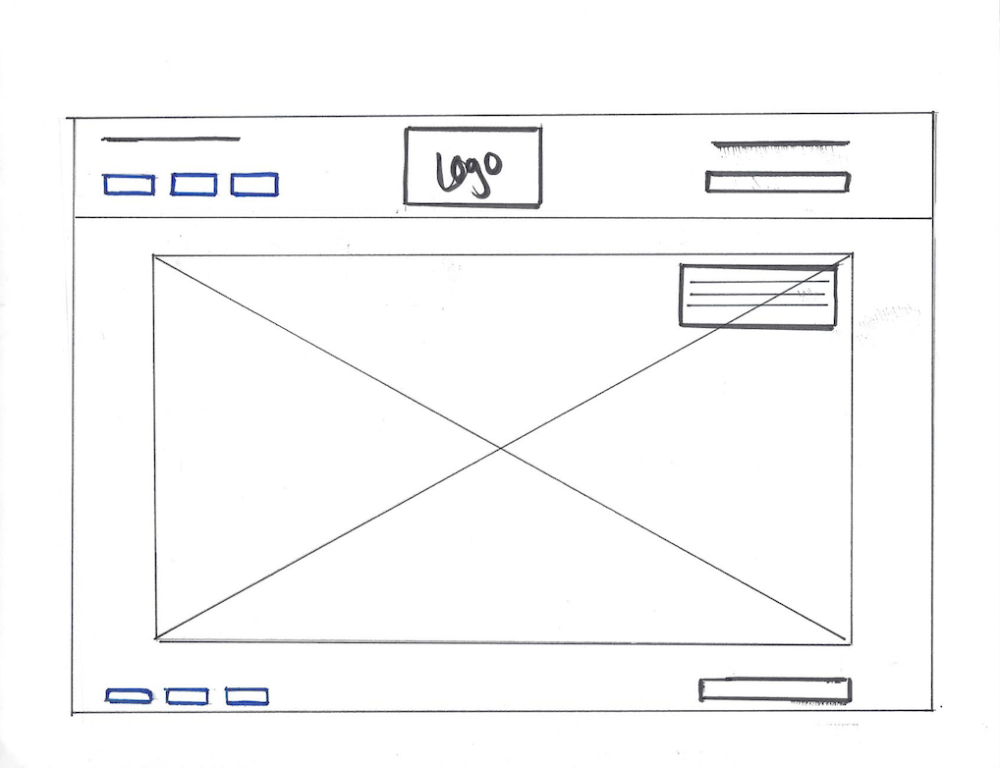
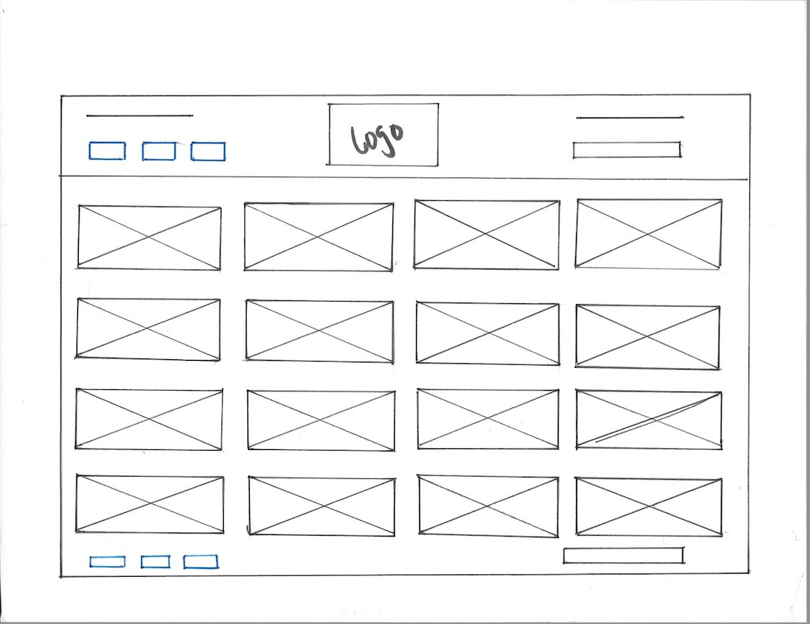
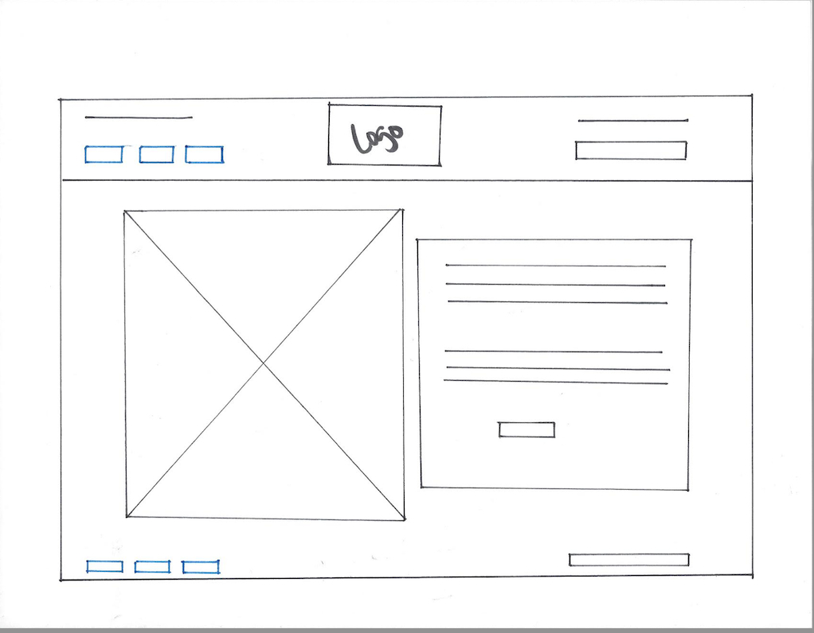

Kickstarter is one of my favorite sites out there. The visitor is immediately drawn in by its strong focal point; the use of video as a hero image. The size of the hero image draws the visitor's attention to the importance of the content found on it. (How to bring creative projects to life) The site uses negative space, below the fold, to draw the visitor to content that is "popular," or important. This is a very balanced site, visually, and flows nicely. The visitor is not overwhelmed with too much content but rather is given enough information to navigate through the site. The site also uses hierarchy nicely as it places the most important content at the top of the index page and the other content below the fold.
Kickstarter and Windows of New York are similar in their use of a strong focal point and in their balance. Both sites also use size to highlight important content and to provide the visitor with an understanding of how to flow or navigate through the sites.
The sites are different in that Kickstarter uses more negative space to highlight content while Windows of New York uses positive space to emphasize its content.
The home page for "Buy My Glasses" will draw visitors in with its focal point, a large, auto scrolling, hero image of the products available on the site. Hierarchy is demonstated by leaving substantial negative space around the hero image making the product more visible and hopefully more attractive to visitors.
The prodcut page will show an offering of the products available for sale on "Buy My Glasses." Balance is demonstrated by listing the products in equally spaced columns. Hierarchy will, again, be demonstrated by the use of negaive space around the images making the products the focal point of the page.
After viewing the products page, a visitor can click on an item they are interested in learning more about. Upon clicking on the product, they will then be directed to the product detail page. This page's focal point is a large image of the product (which presents the item viewed from different angles.) This page will provide balance by including a description of the item and an "Add to Cart" button. Negative space and size will be used to draw attention to the product.
